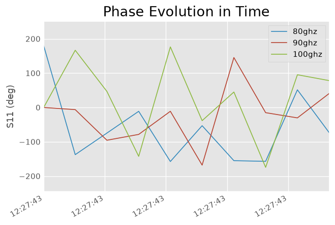
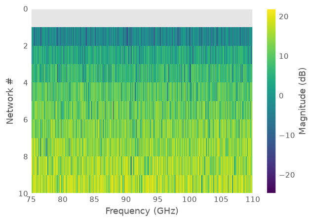
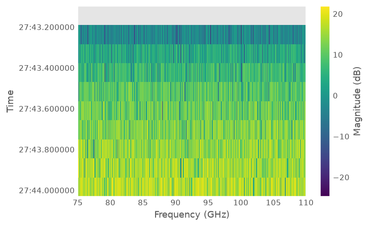

Sorting Network Sets#
Frequently a set of Networks is recorded while changing some other variable; like voltage, or current or time. So… now you have this set of data and you want to look at how some feature evolves, or calculate some representative statistics. This example demonstrates how to do this using NetworkSets.
Generate some Data#
For the purpose of this example we use a predefined skrf.media.Media object to generate some networks, and save them as a series of touchstone files. Each file is named with a timestamp, generated with the convenience function rf.util.now_string().
[1]:
from time import sleep
import matplotlib.pyplot as plt
import numpy as np
import skrf as rf
from skrf.util import now_string, now_string_2_dt
%matplotlib inline
rf.stylely()
!rm -rf tmp
!mkdir tmp
wg = rf.instances.wr10 # just a dummy media object to generate data
for k in range(10):
# timestamp generated with `now_string()`
ntwk = wg.random(name=now_string()+'.s1p')
ntwk.s = k*ntwk.s
ntwk.write_touchstone(dir='tmp')
sleep(.1)
Lets take a look at what we made
[2]:
!ls tmp
2026.11.15.12.27.43.096615.s1p 2026.11.15.12.27.43.614947.s1p
2026.11.15.12.27.43.199835.s1p 2026.11.15.12.27.43.718788.s1p
2026.11.15.12.27.43.303446.s1p 2026.11.15.12.27.43.822645.s1p
2026.11.15.12.27.43.407438.s1p 2026.11.15.12.27.43.926583.s1p
2026.11.15.12.27.43.511033.s1p 2026.11.15.12.27.44.030429.s1p
Not sorted (default)#
When created using NetworkSet.from_dir(), the NetworkSet’s stores each Network randomly
[3]:
ns = rf.networkSet.NetworkSet.from_dir('tmp')
ns.ntwk_set
[3]:
[1-Port Network: '2026.11.15.12.27.43.096615', 75.0-110.0 GHz, 1001 pts, z0=[50.+0.j],
1-Port Network: '2026.11.15.12.27.43.199835', 75.0-110.0 GHz, 1001 pts, z0=[50.+0.j],
1-Port Network: '2026.11.15.12.27.43.303446', 75.0-110.0 GHz, 1001 pts, z0=[50.+0.j],
1-Port Network: '2026.11.15.12.27.43.407438', 75.0-110.0 GHz, 1001 pts, z0=[50.+0.j],
1-Port Network: '2026.11.15.12.27.43.511033', 75.0-110.0 GHz, 1001 pts, z0=[50.+0.j],
1-Port Network: '2026.11.15.12.27.43.614947', 75.0-110.0 GHz, 1001 pts, z0=[50.+0.j],
1-Port Network: '2026.11.15.12.27.43.718788', 75.0-110.0 GHz, 1001 pts, z0=[50.+0.j],
1-Port Network: '2026.11.15.12.27.43.822645', 75.0-110.0 GHz, 1001 pts, z0=[50.+0.j],
1-Port Network: '2026.11.15.12.27.43.926583', 75.0-110.0 GHz, 1001 pts, z0=[50.+0.j],
1-Port Network: '2026.11.15.12.27.44.030429', 75.0-110.0 GHz, 1001 pts, z0=[50.+0.j]]
Sort it#
[4]:
ns.sort()
ns.ntwk_set
[4]:
[1-Port Network: '2026.11.15.12.27.43.096615', 75.0-110.0 GHz, 1001 pts, z0=[50.+0.j],
1-Port Network: '2026.11.15.12.27.43.199835', 75.0-110.0 GHz, 1001 pts, z0=[50.+0.j],
1-Port Network: '2026.11.15.12.27.43.303446', 75.0-110.0 GHz, 1001 pts, z0=[50.+0.j],
1-Port Network: '2026.11.15.12.27.43.407438', 75.0-110.0 GHz, 1001 pts, z0=[50.+0.j],
1-Port Network: '2026.11.15.12.27.43.511033', 75.0-110.0 GHz, 1001 pts, z0=[50.+0.j],
1-Port Network: '2026.11.15.12.27.43.614947', 75.0-110.0 GHz, 1001 pts, z0=[50.+0.j],
1-Port Network: '2026.11.15.12.27.43.718788', 75.0-110.0 GHz, 1001 pts, z0=[50.+0.j],
1-Port Network: '2026.11.15.12.27.43.822645', 75.0-110.0 GHz, 1001 pts, z0=[50.+0.j],
1-Port Network: '2026.11.15.12.27.43.926583', 75.0-110.0 GHz, 1001 pts, z0=[50.+0.j],
1-Port Network: '2026.11.15.12.27.44.030429', 75.0-110.0 GHz, 1001 pts, z0=[50.+0.j]]
Sorting using key argument#
You can also pass a function through the key argument, which allows you to sort on arbitrary properties. For example, we could sort based on the sub-second field of the name,
[5]:
ns = rf.networkSet.NetworkSet.from_dir('tmp')
ns.sort(key = lambda x: x.name.split('.')[0])
ns.ntwk_set
[5]:
[1-Port Network: '2026.11.15.12.27.43.096615', 75.0-110.0 GHz, 1001 pts, z0=[50.+0.j],
1-Port Network: '2026.11.15.12.27.43.199835', 75.0-110.0 GHz, 1001 pts, z0=[50.+0.j],
1-Port Network: '2026.11.15.12.27.43.303446', 75.0-110.0 GHz, 1001 pts, z0=[50.+0.j],
1-Port Network: '2026.11.15.12.27.43.407438', 75.0-110.0 GHz, 1001 pts, z0=[50.+0.j],
1-Port Network: '2026.11.15.12.27.43.511033', 75.0-110.0 GHz, 1001 pts, z0=[50.+0.j],
1-Port Network: '2026.11.15.12.27.43.614947', 75.0-110.0 GHz, 1001 pts, z0=[50.+0.j],
1-Port Network: '2026.11.15.12.27.43.718788', 75.0-110.0 GHz, 1001 pts, z0=[50.+0.j],
1-Port Network: '2026.11.15.12.27.43.822645', 75.0-110.0 GHz, 1001 pts, z0=[50.+0.j],
1-Port Network: '2026.11.15.12.27.43.926583', 75.0-110.0 GHz, 1001 pts, z0=[50.+0.j],
1-Port Network: '2026.11.15.12.27.44.030429', 75.0-110.0 GHz, 1001 pts, z0=[50.+0.j]]
Extracting Datetimes#
You can also convert the ntwk names to datetime objects, in case you want to plot something with pandas or do some other processing. There is a companion function to rf.util.now_string() which is rf.util.now_string_2_dt(). How creative..
[6]:
ns.sort()
dt_idx = [now_string_2_dt(k.name ) for k in ns]
dt_idx
[6]:
[datetime.datetime(2026, 11, 15, 12, 27, 43, 96615),
datetime.datetime(2026, 11, 15, 12, 27, 43, 199835),
datetime.datetime(2026, 11, 15, 12, 27, 43, 303446),
datetime.datetime(2026, 11, 15, 12, 27, 43, 407438),
datetime.datetime(2026, 11, 15, 12, 27, 43, 511033),
datetime.datetime(2026, 11, 15, 12, 27, 43, 614947),
datetime.datetime(2026, 11, 15, 12, 27, 43, 718788),
datetime.datetime(2026, 11, 15, 12, 27, 43, 822645),
datetime.datetime(2026, 11, 15, 12, 27, 43, 926583),
datetime.datetime(2026, 11, 15, 12, 27, 44, 30429)]
Put into a Pandas DataFrame and Plot#
The next step is to slice the network set along the time axis. For example we may want to look at S11 phase, at a few different frequencies. This can be done with the following script. Note that NetworkSets can be sliced by frequency with human readable strings, just like Networks.
[7]:
import pandas as pd
dates = pd.DatetimeIndex(dt_idx)
# create a function to pull out S11 in degrees at a specific frequency
s_deg_at = lambda s:{s: [k[s].s_deg[0,0,0] for k in ns]} # noqa: E731
for f in ['80ghz', '90ghz','100ghz']:
df =pd.DataFrame(s_deg_at(f), index=dates)
df.plot(ax=plt.gca())
plt.title('Phase Evolution in Time')
plt.ylabel('S11 (deg)')
[7]:
Text(0, 0.5, 'S11 (deg)')

Visualizing Behavior with signature#
It may be of use to visualize the evolution of a scalar component of the network set over all frequencies. This can be done with a little bit of array manipulation and imshow. For example if we take the magnitude in dB for each network, and create 2D matrix from this,
[8]:
mat = np.array([k.s_db.flatten() for k in ns])
mat.shape
/home/alex/code/scikit-rf-docs/skrf/mathFunctions.py:303: RuntimeWarning: divide by zero encountered in log10
out = 20 * np.log10(z)
[8]:
(10, 1001)
This array has shape ( ‘Number of Networks’ , ‘Number frequency points’). This can be visualized with imshow. Most of the code below just adds labels, and axis-scales.
[9]:
freq = ns[0].frequency
# creates x and y scales
extent = [freq.f_scaled[0], freq.f_scaled[-1], len(ns) ,0]
#make the image
plt.imshow(mat, aspect='auto',extent=extent,interpolation='nearest')
# label things
plt.grid(0)
freq.labelXAxis()
plt.ylabel('Network #')
cbar = plt.colorbar()
cbar.set_label('Magnitude (dB)')

This process is automated with the method NetworkSet.signature(). It even has a vs_time parameter which will automatically create the DateTime index from the Network’s names, if they were written by rf.now_string()
[10]:
ns.signature(component='s_db', vs_time=True,cbar_label='Magnitude (dB)')
